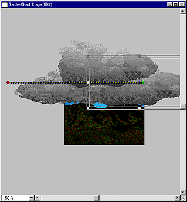
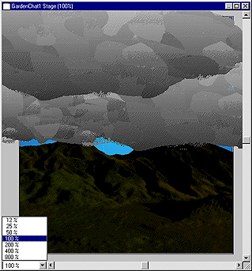
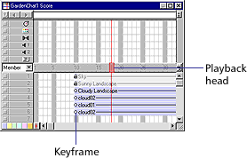

Using Director > Director 8 Tutorial > Create simple tweening animation
Using Director > Director 8 Tutorial > Create simple tweening animation |
Create simple tweening animation
To make the clouds move across the sky, you'll use a simple animation technique called tweening. To tween, you define settings for the starting and ending frames, and Director fills in the frames in between.
1 |
Select the Cloud02 sprite in channel 4 of the Score. |
2 |
On the Stage, locate the blue and red circle in the middle of Cloud02. This is a handle for tweening the path of a sprite. |
3 |
Hold the Shift key and drag the handle to the left, all the way off the Stage and into the canvas area. Scroll to the left, if necessary.
 |
As you drag, the tweening handle separates into different circles. A green circle indicates the starting location of the sprite, a blue circle shows the sprite in relation to the current frame, and a red circle represents the ending location. Holding the Shift key constrains the movement to a straight vertical or horizontal line. |
|
4 |
Select the Cloud01 sprite and use the tweening handles to drag it all the way off the Stage, to the left, and into the canvas area. |
5 |
Select the Cloud02 sprite in channel 6 and tween it off the Stage, to the left. |
6 |
Return the Stage to 100% using one of these methods: |
With the Stage active, Press Control-plus (Windows) or Command-plus (Macintosh) once to increase the Stage size to 100%. |
|
Choose View > Zoom > 100%. |
|
Choose View > Zoom Stage In until the title bar indicates the Stage size is 100%. |
|
Click the Zoom menu and select 100%
 . |
|
7 |
Organize your desktop to see both the Stage and the Score. |
8 |
Click Rewind and Play on the toolbar along the top of the screen. |
The clouds move between the starting and ending points you've defined. |
|
Notice in the Score that the playback head (the red vertical bar) moves across each frame in the Score as the movie plays. The playback head indicates the current frame. You can drag the playback head across the Score to view the desired frame.
 |
|
9 |
Click Stop. |
Note: In the Score, small circles now appear at the beginning and end of the three cloud sprites. These circles represent keyframes, and they indicate where the property of a sprite changes.
Stop the playback head from looping
When you play your movie, the playback head goes to the last frame in the movie and loops back to the first frame. In the tutorial movie, you want the playback head to stop on the last frame. Later in this tutorial, you will add a behavior to make the last frame play continuously.
To stop the playback head from looping, choose Control > Loop Playback to deselect it.
Now when you play your movie, the playback head stops on the last frame.